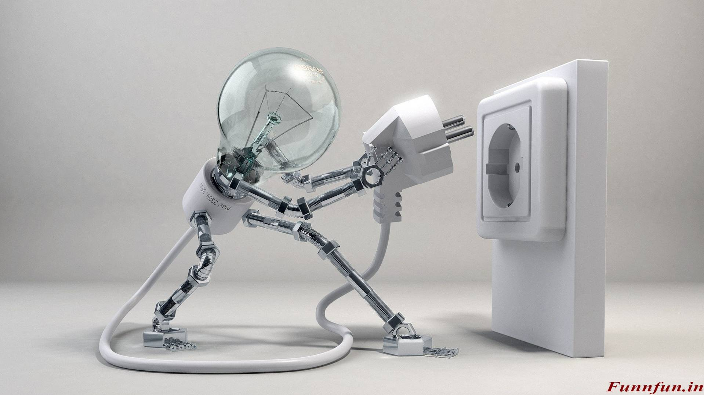
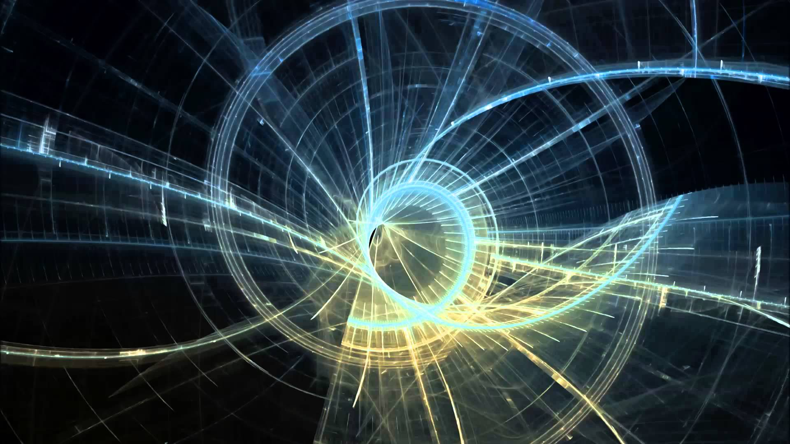
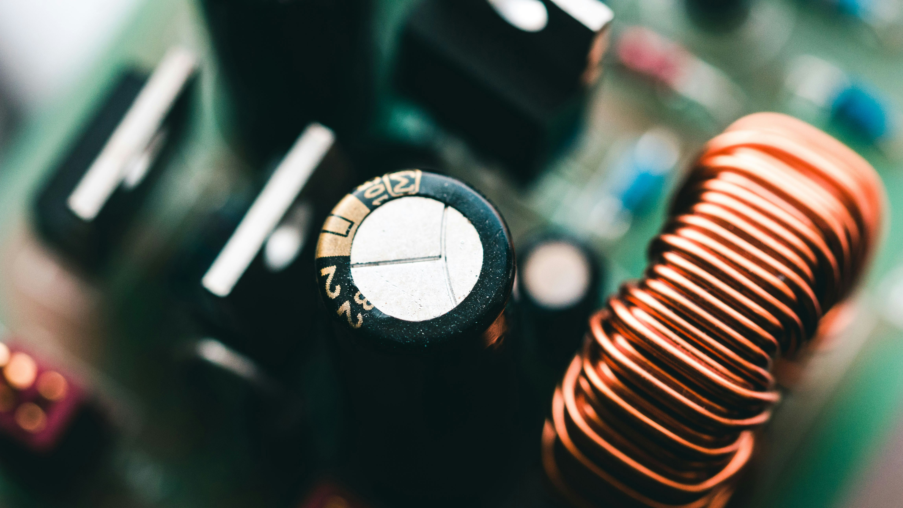
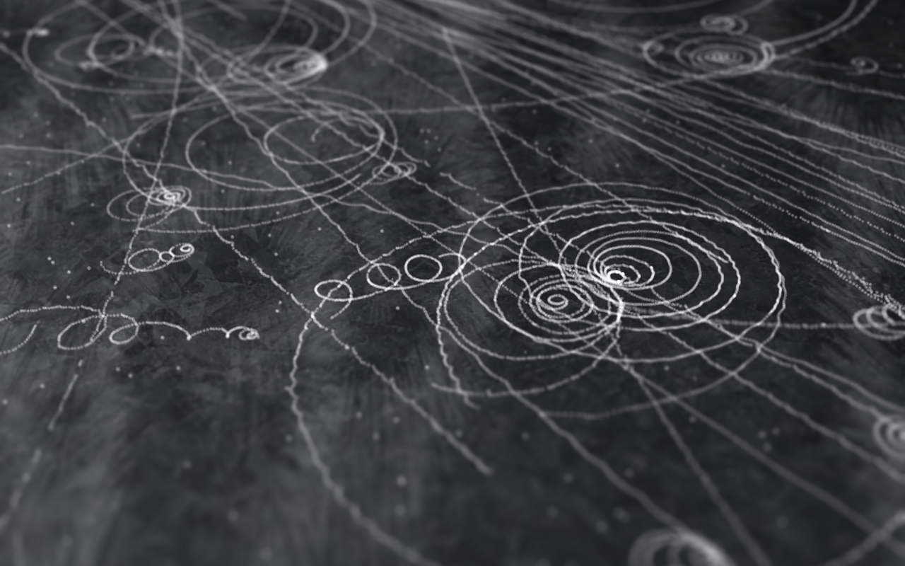

Electric current as rate of flow of charge; I = ΔQ / Δt
The coulomb as the unit of charge.
The elementary charge e equals 1.6 x 10-19C and that an electron has charge -e and a proton a charge +e.
Net charge on a particle or an object is quantised and a multiple of e.
Current as the movement of electrons in metals and movement of ions in electrolytes.
Conventional current and electron flow.
Kirchhoff's first law; conservation of charge.
Mean drift velocity of charge carriers.
I = Anev, where n is the number density of charge carriers.
Distinction between conductors, semiconductors and insulators in terms of n.
Circuit symbols and circuit diagrams using these symbols.
Potential difference (p.d.); the unit volt.
Electromotive force (e.m.f.) of a source such as a cell or a power supply.
Distinction between e.m.f. and p.d. in terms of energy transfer.
Energy transfer; W = VQ W = εQ
Energy transfer eV = 1/2mv2 for electrons and other charged particles.
Resistance, the unit ohm; R = V / I [not in the data book]
Ohm's law.
I-V characteristics of resistor, filament lamp, thermistor, diode and light-emitting diode (LED).
Techniques and procedures used to investigate the electrical characteristics for a range of ohmic and non-ohmic components.
Light-dependent resistor (LDR); variation of resistance with light intensity.
Resistivity of a material, the equation: R=ρL / A
Techniques and procedures used to determine the resistivity of a metal.
The variation of resistivity of metals and semiconductors with temperature.
Negative temperature coefficient (NTC) thermistor; variation of resistance with temperature.
The equations; P = VI P = I2R P = V2 / R
Energy transfer; W = VIt
The kilowatt-hour (kW h) as a unit of energy; calculating the cost of energy.
Kirchhoff's second law; the conservation of energy.
Kirchhoff's first and second laws applied to electrical circuits.
Total resistance of two or more resistors in series; R = R1 + R2 + ...
Total resistance of two or more resistors in parallel; 1/R = 1/R1 + 1/R2 + ...
Analysis of circuits with components, including both series and parallel.
Analysis of circuits with more than one source of e.m.f.
Source of e.m.f.; internal resistance.
Terminal p.d.; 'lost volts'.
The equations: ε = I(R+r) and ε = V + Ir
Techniques and procedures used to determine the internal resistance of a chemical cell or other source of e.m.f.
Potential divider circuit with components. You will also be expected to know about a potentiometer as a potential divider.
Potential divider circuits with variable components, e.g. LDR and thermistor.
Potential divider equations; Vout = R2/(R1+R2) x Vin and V1/V2 = R1/R2
Techniques and procedures used to investigate potential divider circuits which may include a sensor such as a thermistor or an LDR.

Progressive waves; longitudinal and transverse waves.
Displacement, amplitude, wavelength, period, phase difference, frequency and speed of a wave.
Techniques and procedures used to use an oscilloscope to determine frequency.
The equation; f= 1 / T
The wave equation; v = f λ
Graphical representations of transverse and longitudinal waves.
Reflection, refraction, polarisation and diffraction of all waves. You will be expected to know that diffraction effects become significant when the wavelength is comparable to the gap width.
Techniques and procedures used to demonstrate wave effects using a ripple tank.
Techniques and procedures used to observe polarising effects using microwaves and light.
Intensity of a progressive wave; I = P / A intensity ∝ (amplitude)2
Electromagnetic spectrum; properties of electromagnetic waves.
Orders of magnitude of wavelengths of the principal radiations from radio waves to gamma rays.
Plane polarised waves; polarisation of electromagnetic waves. You will be expected to know about polarising filters for light and metal grilles for microwaves in demonstrating polarisation.
Refraction of light; refractive index; n = c /v n sin Θ = constant at a boundary where Θ is the angle to the normal
Techniques and procedures used to investigate refraction and total internal reflection of light using ray boxes, including transparent rectangular and semi-circular blocks.
Critical angle; sin C = 1 / n Total internal reflection for light.
The principle of superposition of waves.
Techniques and procedures used for superposition experiments using sound, light and microwaves.
Graphical methods to illustrate the principle of superposition.
Interference, coherence, path difference and phase difference.
Constructive interference and destructive interference in terms of path difference and phase difference.
Two-source interference with sound and microwaves.
Young's double-slit experiment using visible light. This experiment gave a classical confirmation of the wave-nature of light.
λ = ax / D for all waves where a << D
Techniques and procedures used to determine the wavelength of light using a double-slit and a diffraction grating.
Stationary (standing) waves using microwaves, stretched strings and air columns.
Graphical representations of a stationary wave.
Similarities and the differences between stationary and progressive waves.
Nodes and antinodes.
Stationary wave patterns for a stretched string and air columns in closed and open tubes.
Techniques and procedures used to determine the speed of sound in air by formation of stationary waves in a resonance tube.
The idea that the separation between adjacent nodes (or antinodes) is equal to λ/2 where λ is the wavelength of the progressive wave.
Fundamental mode of vibration (1st harmonic); harmonics.
The particulate nature (photon model) of electromagnetic radiation.
Photon as a quantum of energy of electromagnetic radiation.
Energy of a photon; E = hf and E= hf / λ
The electronvolt (eV) as a unit of energy.
Using LEDs and the equation eV = hc / λ to estimate the value of Planck constant h.
Determine the Planck constant using different coloured LEDs.
Photoelectric effect, including a simple experiment to demonstrate this effect and that the photoelectric effect provides evidence for the particulate nature of electromagnetic radiation.
Demonstration of the photoelectric effect using a gold-leaf electroscope and zinc plate.
A one-to-one interaction between a photon and a surface electron.
Einstein's photoelectric equation; hf = φ + KEmax
Work function; threshold frequency
The idea that the maximum kinetic energy of the photoelectrons is independent of the intensity of the incident radiation.
The idea that rate of emission of photoelectrons above the threshold frequency is directly proportional to the intensity of the incident radiation.
Electron diffraction, including experimental evidence of this effect.
Diffraction of electrons travelling through a thin slice of polycrystalline graphite by the atoms of graphite and the spacing between the atoms.
The de Broglie equation; λ = h / p

Capacitance; the unit farad; C = Q / V
Charging and discharging of a capacitor or capacitor plates with reference to the flow of electrons.
Total capacitance of two or more capacitors in series; 1 / C = 1 / C1 + 1 / C2 + ...
Total capacitance of two or more capacitors in parallel; C = C1 + C2 + ...
Analysis of circuits containing capacitors, including resistors.
Techniques and procedures used to investigate capacitors in both series and parallel combinations using ammeters and voltmeters.
p.d. - charge graph for a capacitor; energy stored is area under graph.
Energy stored by capacitor; W = 1/2 QV and W = 1/2 Q2 / C and W = 1/2 V2C
Uses of capacitors as storage of energy.
Charging and discharging capacitor through a resistor.
Techniques and procedures to investigate the charge and the discharge of a capacitor using both meters and data-loggers.
Time constant of a capacitor-resistor circuit; τ = CR
For capacitor-resistor circuits equations of the form; x = x0 e-t/CR and x = x0 (1 - e-t/CR) You will be expected to know how lnx-t graphs can be used to determine CR.
For a discharging capacitor graphical methods and spreadsheet modelling of the equation; ΔQ / Δt = -Q / CR
Exponential decay graph; constant-ratio property of such a graph.
Electric fields are due to charges.
Modelling a uniformly charged sphere as a point charge at its centre.
Electric field lines to map electric fields.
Electric field strength; E = F / Q
Coulomb's law for the force between two point charges; F = Qq / 4πε0r2
Electric field strength for a point charge; E = Q / 4πε0r2
Similarities and differences between the gravitational field of a point mass and the electric field of a point charge.
The concept of electric fields as being one of a number of forms of field giving rise to a force.
Uniform electric field strength; E = V / d
Parallel plate capacitor; permittivity; C = ε0A / d C = εA / d ε = εr ε0
Motion of charged particles in a uniform electric field.
Electric potential at a point as the work done in bringing unit charge from infinity to the point; electric potential is zero at infinity.
Electric potential at a distance r from a point charge; changes in electric potential; V = Q / 4πε0r
Capacitance for an isolated sphere; C = 4πε0R Derivation expected from equation for electric potential and Q = VC.
Force-distance graph for a point or spherical charge; work done is area under graph.
Electric potential energy at a distance r from a point charge Q; E = Vq = Qq /4πε0r
Magnetic fields are due to moving charges or permanent magnets.
Magnetic field lines to map magnetic fields.
Magnetic field patterns for a long straight current-carrying conductor, a flat coil and a long solenoid.
Fleming's left-hand rule.
Force on a current-carrying conductor; F = BIL sin Θ
Techniques and procedures used to determine the uniform magnetic flux density between the poles of a magnet using a current-carrying wire and digital balance.
Magnetic flux density; the unit tesla.
Force on a charged particle travelling at right angles to a uniform magnetic field; F = BQv
Charged particles moving in a uniform magnetic field; circular orbits of charged particles in a uniform magnetic field.
Charged particles moving in a region occupied by both electric and magnetic fields; velocity selector.
Magnetic flux φ; the unit weber; φ = BA cos Θ
Magnetic flux linkage.
Faraday's law of electromagnetic induction and Lenz's law
e.m.f. = - rate of change of magnetic flux linkage; ε = - Δ(Nφ) / Δt
Techniques and procedures used to investigate magnetic flux using search coils.
Simple a.c. generator.
Simple laminated iron-cored transformer; for an ideal transformer; ns / np = Vs / Vp = Ip / Is
Techniques and procedures used to investigate transformers.

Alpha-particle scattering experiment; evidence of a small charged nucleus.
Simple nuclear model of the atom; protons, neutrons and electrons.
Relative sizes of atom and nucleus.
Proton number; nucleon number; isotopes; notation AZX for the representation of nuclei
Strong nuclear force; short-range nature of the force; attractive to about 3 fm and repulsive below about 0.5 fm.
Radius of nuclei where r0 is a constant and A is the nucleon number; R = r0A1/3
Mean densities of atoms and nuclei.
Particles and antiparticles; electron-positron, proton-antiproton, neutron- antineutron and neutrino-antineutrino.
Particle and its corresponding antiparticle have same mass; electron and positron have opposite charge; proton and antiproton have opposite charge.
Classification of hadrons; proton and neutron as examples of hadrons; all hadrons are subject to the strong nuclear force.
Classification of leptons; electron and neutrino as examples of leptons; all leptons are subject to the weak nuclear force.
Simple quark model of hadrons in terms of up (u), down (d) and strange (s) quarks and their respective anti-quarks.
Quark model of the proton (uud) and the neutron (udd).
Charges of the up (u), down (d), strange (s), anti-up (u), anti-down (d) and the anti-strange (s) quarks as fractions of the elementary charge e.
Beta-minus (β-) decay; beta-plus (β+) decay.
β- decay in terms of a quark model; d -> u + 0-1e + ν(anti-neutrino)
β+ decay in terms of a quark model; u -> d + 0+1e + ν
Balancing of quark transformation equations in terms of charge.
Decay of particles in terms of the quark model.
Radioactive decay; spontaneous and random nature of decay.
α-particles, β-particles and γ-rays; nature, penetration and range of these radiations.
Techniques and procedures used to investigate the absorption of α- particles, β-particles and γ-rays by appropriate materials.
Nuclear decay equations for alpha, beta-minus and beta-plus decays; balancing nuclear transformation equations.
Activity of a source; decay constant λ of an isotope; A = λN
Half-life of an isotope; λt1/2 = ln(2)
Techniques and procedures used to determine the half-life of an isotope such as protactinium
The equations; A = A0e-λt N = N0e-λt Where A is the activity and N is the number of undecayed nuclei.
Simulation of radioactive decay using dice.
Graphical methods and spreadsheet modelling of the equation for radioactive decay; ΔN /Δt = -λN
Radioactive dating, e.g. carbon-dating.
Einstein's mass-energy equation; ΔE = Δmc2
Energy released (or absorbed) in simple nuclear reactions.
Creation and annihilation of particle-antiparticle pairs.
Mass defect; binding energy; binding energy per nucleon.
Binding energy per nucleon against nucleon number curve; energy changes in reactions.
Binding energy of nuclei using ΔE = Δmc2 and masses of nuclei.
Induced nuclear fission; chain reaction.
Basic structure of a fission reactor; components - fuel rods, control rods and moderator.
Environmental impact of nuclear waste.
Nuclear fusion; fusion reactions and temperature.
Balancing nuclear transformation equations.
Basic structure of an X-ray tube; components - heater (cathode), anode, target metal and high voltage supply.
Production of X-ray photons from an X-ray tube.
X-ray attenuation mechanisms; simple scatter, photoelectric effect.
Compton effect and pair production.
Attenuation of X-rays where µ is the attenuation (absorption) coefficient; I = I0e-µx
X-ray imaging with contrast media; barium and iodine.
Computerised axial tomography (CAT) scanning; components - rotating X- tube producing a thin fan-shaped X-ray beam, ring of detectors, computer software and display.
Advantages of a CAT scan over an X-ray image.
Medical tracers; technetium-99m and fluorine-18.
Gamma camera; components - collimator, scintillator, photomultiplier tubes, computer and display; formation of image.
Diagnosis using gamma camera.
Positron emission tomography (PET) scanner; annihilation of positron- electron pairs; formation of image.
Diagnosis using PET scanning.
Ultrasound; longitudinal wave with frequency greater than 20 kHz.
Piezoelectric effect; ultrasound transducer as a device that emits and receives ultrasound.
Ultrasound A-scan and B-scan.
Acoustic impedance of a medium; Z = ρc
Reflection of ultrasound at a boundary; Ir / I0 = (Z2 - Z1)2 / (Z2 + Z1)2
Impedance (acoustic) matching; special gel used in ultrasound scanning.
Doppler effect in ultrasound; for determining the speed v of blood in the patient; Δf/ f = 2v cosθ / c